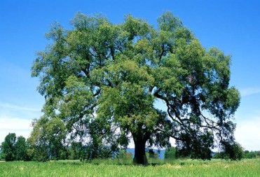
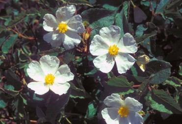

Flora en Monfragüe
Explora la variada vegetación que forma parte del ecosistema único de Monfragüe.
Encina (Quercus ilex rotundifolia)
Llega a medir entre 15 o 20 m aunque en algunos casos llegan a ser bastante más grandes. Es un árbol del que el hombre ha obtenido y obtiene gran variedad de productos: leña, alimento para el ganado…, además de servir para cobijo de pajarillos, base de nidos de grandes rapaces, etc.

Alcornoque (Quercus suber)
Árbol característico de las dehesas extremeñas, al igual que la encina, aunque este requiere algo más de humedad que aquélla, por lo que es más abundante en las umbrías. Es un árbol de gran importancia económica, ya que de él el hombre extrae diversos productos, tales como las bellotas, el corcho o su madera utilizada como leña. Una vez realizada la saca del corcho, que se produce cada 9 ó 10 años, el tronco de este árbol queda de un color rojizo muy característico y de gran belleza.
Jara Cervuna (Cistus populifolius)
Arbusto de grandes hojas acorazonadas, tallos rojizos y fuerte olor balsámico. Especie presente en toda la Península sobre todo en el sur, que requiere suelos y ambientes algo más frescos que otras jaras. El nombre específico de esta planta significa hoja de álamo, dado la semejanza existente. La madera, como la de todas las jaras, es muy dura y resistente, pero dado su pequeño tamaño, sólo se utiliza para quemar.
